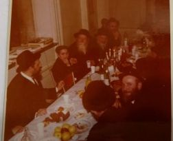

הרה”ח ר’ שמריהו מטוסוב למד בישיבות: תומכי תמימים ברינואה, אהלי תורה, תומכי תמימי
הרה”ח ר’ שמריהו מטוסוב למד בישיבות: תומכי תמימים ברינואה, אהלי תורה, תומכי תמימים המרכזית ב-770 תפקיד נוכחי: משפיע ישיבת תומכי תמימים בהרי הפוקונוס, פנסלבניה
הרה”ח ר’ שמריהו מטוסוב
למד בישיבות: תומכי תמימים ברינואה, אהלי תורה, תומכי תמימים המרכזית ב-770
תפקיד נוכחי: משפיע ישיבת תומכי תמימים בהרי הפוקונוס, פנסלבניה

זכיתי להכנס לישיבת תומכי תמימים בברינואה כבר בגיל אחת–עשרה וחצי, ומעשה שהיה כך היה: התגוררנו בשליחות הרבי מלך המשיח במרוקו, ובילדותי למדתי בתלמוד תורה שאבי הקים בקזבלנקה. כאשר הגעתי לגיל עשר, ביקש אבי לשלוח אותי ללמוד בישיבה בברינואה, אך מנהל הישיבה, הרה”ח ר’ ניסן נמנוב, לא הסכים לקבל ילד צעיר כל כך. אבי כתב על כך לרבי, ונענה שבינתיים עלי להמשיך ללמוד בקזבלנקה. אני זוכר עד היום כיצד הראה לי אבי את מענה הרבי, תוך שהוא מסתיר את שאר חלקי המכתב, בהם היו הוראות בנוגע לשליחותו, שאינן נוגעות לי…
כעבור שנה, בעקבות התגברות גלי העלייה ממרוקו לארץ ישראל, לא נותרו מספיק תלמידים לכיתות הגבוהות, ולמעשה לא הייתה לי אפשרות להמשיך ללמוד בקזבלנקה. מאידך, גם לשאר השלוחים במרוקו היו ילדים בגילי, וכך הוחלט שכולנו נעבור ללמוד בישיבה בברינואה. לי היה קל לפי–ערך, כיוון שגם אחיי המבוגרים למדו בישיבה.
הזכרון המשמעותי הראשון שלי מהישיבה, הוא מחגיגת הבר–מצווה שלי, שנחרתה בזכרוני משתי סיבות: א. חגגתי אותה בישיבה בברינואה. ב. אבי לא היה יכול להשתתף בבר–מצווה, והרה”ח ר’ ניסן נמנוב מילא את מקומו.
בשנים ההן, כל יציאה ממרוקו הייתה כרוכה בקשיים גדולים, כך שפעמים רבות נאלצו הוריי לוותר על השתתפות בשמחות משפחתיות, לטובת השליחות. בבר מצווה של אחי, הרה”ח ר’ ראובן, גם אבי וגם אמי לא יכלו להשתתף. לבר מצווה שלי, אמי הצליחה להגיע, אבל אבי לא יכול לעזוב את מקום שליחותו, וכך חגגתי את הבר–מצווה כשבשולחן הכבוד עומד כסא ריק, עבור אבי…
אמי וחברותיה ארגנו את הצד הגשמי של הבר–מצווה, ואת הצד הרוחני ניהל ברגישות רבה הרה”ח ר’ ניסן נמנוב. בתחילת הערב סידרו ‘שידור חי’ ממרוקו, ואבי העביר נאום ברכה קצר, ואחר–כך המשיך ר’ ניסן לנהל את כל האירוע, שמהר מאוד הפך להתוועדות חסידית פנימית ואותנטית, בה ביאר בהרחבה את ההבדל בין ‘הערן’ ו’דערהערן’ את דברי הרבי.
למרות השנים הרבות שחלפו מאז, אני זוכר היטב את תוכן דבריו של ר’ ניסן, שתיאר כיצד למד אבי במסירות נפש בתומכי תמימים המחתרתית במלחובקה שבפרברי מוסקבה. “אביך היה צריך ללמוד במרתף חשוך עם חלון קטן שקבוע צמוד לתקרה”, אמר ר’ ניסן, ובירך אותי ש”אחרי שאביך למד מתוך ניסיון של ‘עוני’ ומסירות נפש - אתה תזכה ללמוד מתוך ניסיון של עושר והרחבה”.
חווייה משפיעה
לאחר שסיימתי את הלימודים בברינואה, ועברתי ללמוד באהלי תורה, ומאוחר יותר בישיבת תות”ל המרכזית ב–770, הרי עיקר הזכרונות החשובים ביותר מתומכי תמימים, הם אלו הנוגעים בקשר המיוחד, האישי, שזכינו לקבל מהרבי, בתור תלמידי תומכי תמימים.
החל מברכת הבנים בערב יום הכיפור, המשך בהזכות ללוות את הרבי בהליכתו מ–770 לביתו, ולשמור על ביתו של הרבי, בשנים בהן היינו עושים תורנות שמירה בבית שליד ביתו של הרבי. כך גם הזכות לאפות את המצות של הרבי - כל אלו היו זכויות ששמורות לבחורים בלבד.
אבל החוויה העמוקה ביותר, היא היחידות אצל הרבי, בזכות המשפיע שלי בתומכי תמימים:
הגעתי לרבי לראשונה באלול תשל”ד, והתחלתי ללמוד ב’אהלי תורה’. בדיוק חודש לאחר בואי, בשמחת תורה תשל”ה, הודיע הרבי כי מכאן ואילך לא יוכלו תלמידי הישיבה להתקבל ל’יחידות’ לכבוד יום ההולדת שלהם, כפי שהיה נהוג עד אז… מאוד כאב לי על שלא אוכל להיכנס ליחידות, והמשפיע שלי - הרה”ח ר’ פינחס קארף - שראה בכאבי, פנה אל מזכירו של הרבי, הרה”ח ר’ יהודה לייב גרונר, וביקשו לסדר לי יחידות, אם לא לכבוד יום ההולדת - לפחות בתור אורח שאף פעם לא נכנס ליחידות. הרב גרונר סירב, אך המשפיע שלי המשיך ללחוץ ולבקש עבורי.
חלפו כמה חודשים, ובשלהי מנחם אב, כאשר הישיבה כולה נמצאת בקעמפ גן ישראל בהרי ניו–יורק, הגיע אלי ר’ פינחס, ואמר שקיבל כעת טלפון מהרב גרונר, שסידר לי תור ליחידות ביום ראשון הקרוב. קיבלתי את ההודעה לקראת שבת, ולא ידעתי איך אוכל להכנס ליחידות בהתראה כל כך קצרה, איך אוכל להתכונן כיאות? דיברתי על כך עם המשפיע ר’ שלמה מאיעסקי, שהיה איתנו בקיץ, והוא אמר: נותנים לך תור, תכנס… ולגבי ההכנות - מה שתספיק, תספיק…
כך נכנסתי בפעם הראשונה והיחידה בחיי, ליחידות בקודש הקדשים ממש - בזכות המשפיע שלי בתומכי תמימים.
דמות מיוחדת
האמת היא שאני זוכר היטב את כל המשפיעים, ועד היום אני ‘חי’ עם מה שקיבלתי מכל אחד מהם. אבל הקשר הפנימי וההדוק ביותר היה לי עם הרה”ח ר’ שלמה מאיעסקי. היה לנו קשר אישי מיוחד, שהשפיע עלי לאורך השנים.
אספר דוגמא אחת לקשר המיוחד וההשפעה ארוכת הטווח: כאשר למדנו אצלו את המשך רנ”ט, פעם בשבוע הוא היה בוחן אותנו על התוכן של המאמר שלמדנו השבוע. בתחילה לא היה נראה לי שאוכל ללמוד בכל שבוע מאמר בעל פה, אבל הוא עודד אותי מאוד, והמשיך לבחון אותי גם לאחר שעזבתי את כיתתו, ואפילו לאחר שעברתי ללמוד בחובבי תורה, במסגרת הלימודים בישיבת תות”ל המרכזית, הוא המשיך לבחון אותי בכל שבת, אחרי תפילת ערבית, על המאמר שלמדתי באותו שבוע. המסירות שלו הפעימה אותי, והוא הצליח לשכנע אותי שאני מסוגל לזה. ודומני כי בגלל זה זכיתי להיות חבר במערכת ‘ספר הליקוטים’ שכידוע זה היה פרויקט שהרבי מסר לבחורים של 770.
צידה לדרך
לחפש תמיד את נקודת האמת - זו הנקודה שקיבלתי תחילה מאבי (שזכה להיות מתלמידי תומכי תמימים במסירות נפש, והמשיך עם אותה מסירות נפש בשליחות הרבי), ואחר–כך מכל המשפיעים שזכיתי ללמוד אצלם.
כאשר לומדים, אפשר לחפש את המציאות האישית בתוך הלימוד, כמו מה זה אומר לי, ואיך אוכל לנצל את זה בחיים האישיים שלי. זאת לא האמת. המשפיעים שלי, לאורך השנים, החדירו בי את הנקודה, שכאשר לומדים - צריכים להתייגע להגיע לאמת של הלימוד, לדעת באמת מה הייתה השאלה, ומה הייתה התשובה.
ובעיקר - להתבטל לרבי באמת. וגם כאן, ההדגשה על נקודת האמת. כי הרבה פעמים אנחנו יכולים לרמות את עצמנו שאנחנו בטלים לרבי. אבל האם זה באמת? האם כל מעשה, דיבור או מחשבה שלנו - מתאימים לרצון של הרבי? האם אנחנו בודקים תדיר את עצמנו, האם אנחנו מכוונים לדעתו ורצונו של הרבי?
את התביעה התמידית הזאת, קיבלתי מהמשפיעים בתומכי תמימים, ואת הנקודה הזאת אני משתדל לחיות בעצמי, ולהעביר הלאה בהתוועדויות. ובהדגשה מיוחדת בשליחות העיקרית שלנו: האם אנחנו רוצים משיח באמת?